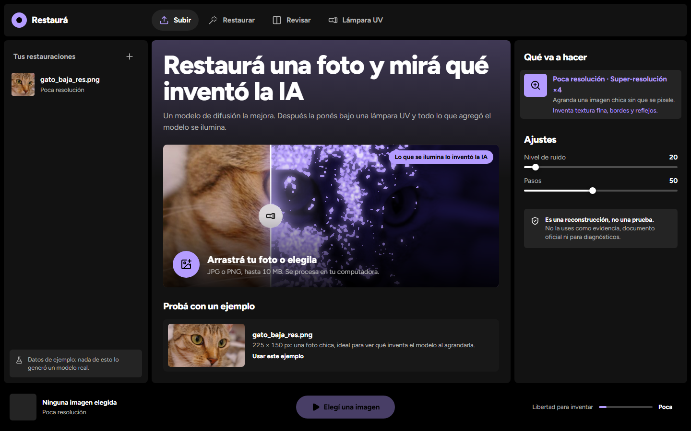
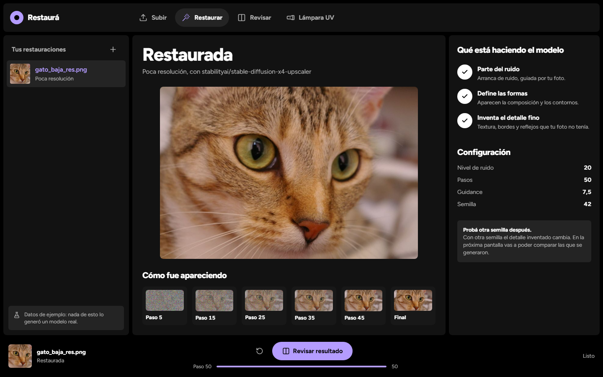
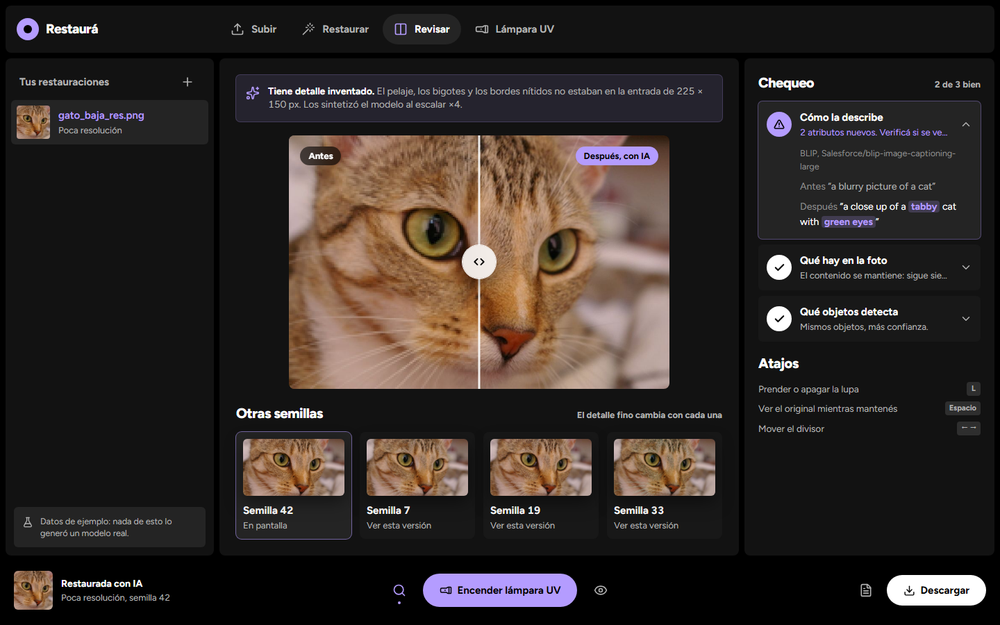
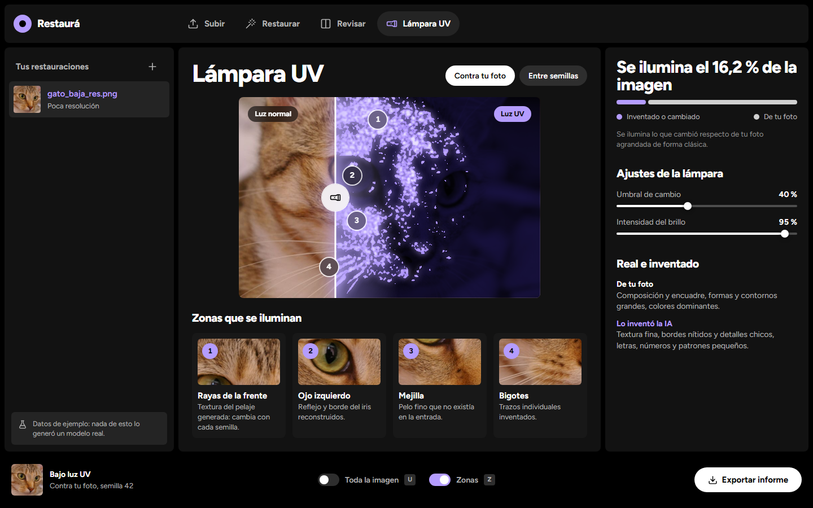

| Trabajo: | Trabajo Final 2 (TP Integrador 2) |
| Autora: | Dominguez, Micaela Belén |
| Profesor: | Matías Barreto |
| Versión: | 1.0 |
Lámpara UV es una aplicación que agranda cuatro veces una foto chica usando un modelo de inteligencia artificial de difusión. A diferencia de las aplicaciones habituales para «mejorar fotos», no entrega solamente una imagen más nítida: también muestra qué partes del resultado no estaban en la foto original y fueron reconstruidas por el modelo.
El nombre viene de la técnica que usan los restauradores de arte: bajo luz ultravioleta, la pintura original se ve opaca y los retoques brillan. En la aplicación pasa lo mismo: lo que se ilumina, lo inventó el modelo.
Está pensada para personas que digitalizan fotos familiares o personales con un escáner o con el celular, y que quieren agrandarlas para compartirlas sin que el programa cambie detalles importantes sin avisar. No hace falta saber nada técnico sobre inteligencia artificial.
El resultado es una reconstrucción creíble, no una prueba. La información que se perdió al achicar una foto ya no existe: el modelo la reemplaza por algo que parece verosímil. Un rostro ampliado es una cara posible, no la cara de la persona. Un texto, una matrícula o un número ampliados pueden mostrar caracteres que nunca estuvieron. No use el resultado como evidencia, documento oficial ni para diagnósticos.
| Elemento | Requisito |
|---|---|
| Placa de video | NVIDIA con 8 GB de memoria o más. Con menos memoria, el programa funciona activando un modo de ahorro (ver sección 8). Sin placa de video también funciona, pero cada restauración puede tardar muchos minutos. |
| Espacio en disco | Unos 8 GB libres para los modelos de inteligencia artificial. |
| Internet | Solo la primera vez, para descargar los modelos. Después funciona sin conexión. |
| Navegador | Una versión actual de Chrome, Edge o Firefox. |
| Programas | uv, el gestor de Python del proyecto. Se encarga de instalar Python 3.12 y todas las dependencias. |
Tabla 1. Requisitos del equipo.
Se aceptan fotos en formato PNG, JPG o WEBP de hasta 10 MB. Las imágenes con transparencia o en blanco y negro se convierten a color automáticamente. Si la foto es grande, el programa la achica antes de restaurarla (hasta 256 píxeles de lado con placa de video), por lo que conviene usar fotos que ya sean chicas.
Abra una terminal (en Windows, PowerShell) y ejecute los siguientes comandos, uno por vez:
git clone https://github.com/dominguezmicaela/iagen.git cd iagen uv sync
El último comando descarga e instala todo lo necesario. Puede tardar varios minutos la primera vez.
Dentro de la carpeta del proyecto, ejecute:
uv run iniciar.py
El programa se inicia y abre el navegador en la dirección http://127.0.0.1:8000. La primera restauración tarda más de lo habitual porque el programa descarga y carga los modelos. Para cerrar la aplicación, vuelva a la terminal y presione Ctrl + C.
Para recorrer la interfaz sin placa de video ni modelos, inicie el programa así:
uv run iniciar.py --simulado
En este modo, la «restauración» es una ampliación clásica con realce y la verificación devuelve datos fijos. La aplicación lo indica en pantalla.
Todas las pantallas comparten la misma organización:
En pantallas chicas, el menú muestra solo los íconos, Tus restauraciones pasa a un botón del menú que despliega la lista, y los paneles se ubican uno debajo del otro.

Para cambiar la foto elegida, use el botón con la cruz en la esquina de la imagen.

Mientras el modelo trabaja, la pantalla muestra en todo momento qué está haciendo:
Después de la imagen principal, el programa genera tres versiones más con semillas distintas y luego verifica el resultado. Con la configuración por defecto, todo el proceso lleva alrededor de un minuto en una placa de video como la usada en las pruebas. Al terminar, presione Revisar resultado.

Arriba aparece un aviso fijo que indica qué detalles no estaban en la foto original. Debajo:
| Chequeo | Qué responde |
|---|---|
| Cómo la describe (BLIP) | Describe ambas fotos en una frase (en inglés) y resalta las palabras nuevas de la segunda descripción. Son detalles para verificar. |
| Qué hay en la foto (CLIP) | Indica si sigue siendo el mismo tipo de foto (un animal, una persona, un objeto, un paisaje) y si parece de alta o de baja resolución. |
| Qué objetos detecta (DETR) | Compara los objetos detectados en ambas fotos y avisa si aparecieron o desaparecieron. |
Tabla 2. Chequeos del resultado.
Estos modelos también pueden equivocarse: sus resultados son alertas para mirar con atención, nunca una prueba.

Presione Encender lámpara UV en la pantalla Revisar o elija el paso en el menú superior.
La marca de la descarga no puede quitarse desde la aplicación: es parte de su propósito, para que la imagen no circule sin su aclaración.
| Tecla | Pantalla | Acción |
|---|---|---|
| L | Revisar | Prender o apagar la lupa. |
| Espacio (mantener) | Revisar | Ver la foto original mientras se mantiene presionada. |
| ← → | Revisar | Mover el divisor del comparador. |
| U | Lámpara UV | Iluminar toda la imagen. |
| Z | Lámpara UV | Mostrar u ocultar las zonas. |
| Esc | Todas | Cerrar la lista de restauraciones. |
Tabla 3. Atajos de teclado.
| Se conserva de su foto | Lo inventa el modelo |
|---|---|
| La composición y el encuadre. | La textura fina: pelo, piel, tela. |
| Las formas y los contornos grandes. | Los bordes nítidos. |
| Los colores dominantes. | Los detalles chicos y, sobre todo, letras, números y patrones pequeños. |
Tabla 4. Qué es dato y qué es reconstrucción.
Algunas pautas para leer la información de la aplicación:
| Mensaje | Qué hacer |
|---|---|
| «El archivo tiene que ser una imagen (JPG, PNG o WEBP).» | Elija un archivo de imagen. Si la foto está en otro formato (por ejemplo, HEIC del celular), conviértala antes a JPG. |
| «La imagen pesa más de 10 MB.» | Use una versión más liviana de la foto o redúzcala con cualquier editor. |
| «No se pudo leer la imagen: puede estar dañada o en un formato no soportado.» | Abra la foto con otro programa para comprobar que se vea bien y vuelva a guardarla como JPG o PNG. |
| «La GPU se quedó sin memoria. Probá con RESTAURA_OFFLOAD=1 o con menos pasos.» | Baje la cantidad de pasos, o cierre la aplicación e iníciela con el modo de ahorro de memoria (ver más abajo). |
| «No hay conexión con el servidor.» | La aplicación se cerró. Vuelva a ejecutar uv run iniciar.py en la terminal. |
| «No existe ese trabajo (puede que se haya borrado de la memoria).» | La aplicación guarda solo las últimas 10 restauraciones y las borra al cerrarse. Vuelva a restaurar la foto. |
| «Todavía no hay nada para revisar.» | Suba una foto y restáurela antes de abrir Revisar o Lámpara UV. |
Tabla 5. Mensajes de error frecuentes.
Para iniciar la aplicación con el modo de ahorro de memoria en Windows (PowerShell):
$env:RESTAURA_OFFLOAD = "1" uv run iniciar.py
No. Todo el procesamiento ocurre en su equipo. Internet se usa únicamente la primera vez, para descargar los modelos.
Porque el detalle fino lo genera el modelo a partir de ruido aleatorio, y la semilla define ese ruido. Lo que coincide entre todas las versiones proviene de su foto.
No. Es una reconstrucción creíble, no un registro verificable.
Porque el programa carga los modelos en memoria (y, la primera vez, los descarga). Las restauraciones siguientes son más rápidas.
Solo mientras la aplicación está abierta, y hasta un máximo de 10. Para conservar un resultado, descárguelo.
| Término | Significado |
|---|---|
| Difusión | Tipo de modelo de inteligencia artificial que parte de ruido y lo va refinando, paso a paso, hasta formar una imagen. |
| Semilla | Número que define el punto de partida aleatorio del modelo. Con la misma semilla y los mismos ajustes, el resultado se repite. |
| Nivel de ruido | Cuánto ruido se agrega a la foto antes de restaurarla. Más ruido da más libertad al modelo para inventar. |
| Pasos | Cantidad de refinamientos que hace el modelo. Más pasos llevan más tiempo. |
| Bicúbica | Forma clásica de agrandar una imagen calculando cada píxel nuevo a partir de sus vecinos. Sirve de referencia: lo que no explica, lo aportó el modelo. |
| Umbral | Valor de cambio a partir del cual una zona se considera modificada y se ilumina. |
| GPU | Placa de video. Acelera mucho el trabajo de los modelos de inteligencia artificial. |
Tabla 6. Glosario.